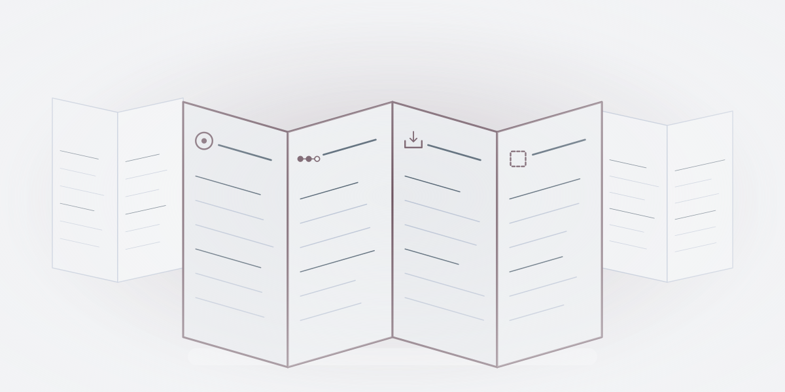
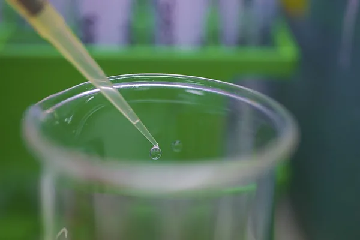
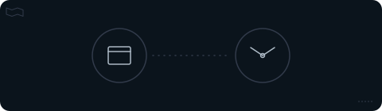
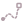
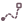

De … største af temaets … selskaberTemaets … selskaber
Tryk på et selskab for at se mere om det.
Vis alle … selskaber i temaet
Andele i PMINDI, den udgave af fonden, der udbetaler udbytte, pr. … (fondens data).


Et af de … temaer i NewDeal Invest
Hvilket produkt er dokumenteret, og hvem betaler?
Sundhedstjenester, bioteknologi og lægemidler har forskellige kunder og krav til dokumentation. Undersøg, hvad hvert selskab leverer, hvor langt det er, og hvad dets omsætning fortæller.

… %
af PMINDI er placeret i temaet Sundhed og biotek.
Andele i PMINDI, den udgave af fonden, der udbetaler udbytte, pr. … (fondens data).
De … temaer efter størrelse. Sundhed er nr. ….
Det har vi skrevet
Ordret uddrag af NewDeal Invests egne ugebreve og indlæg om temaet, med dato og link til hele teksten. Det er ikke en anbefaling.
»Intuitive Surgical, der udvikler kirurgiske robotter, gør det muligt for kirurgen at styre operationen via et joystick fra en fjern position. Robotten, meget passende kaldet Da Vinci, indsamler samtidig data, der fungerer som en slags co-pilot og assisterer kirurgen med råd og vejledning under operationen.«
Nævner: Intuitive Surgical
Læs hele teksten på bloggen (åbner i nyt vindue)Sundhed og biotek
Hver gruppe har sin egen seddel med de samme fire spørgsmål. Tallet ved hver gruppe er dens andel af fonden. Tryk på en seddel for at folde den ud.
Lægekonsultationer over nettet, levering af medicin, digitale programmer for fx diabetes og fysioterapi, diagnostik (undersøgelser, der finder ud af, hvad en patient fejler) og en sygeforsikring.
Tjenesterne er i brug i dag.
Forskelligt. Hims & Hers og LifeMD henvender sig direkte til forbrugerne. Hims & Hers giver over nettet adgang til autoriserede behandlere, som kan udskrive medicin, når det er relevant, fx inden for hårtab, vægttab, sexologisk sundhed og hud. Det meste af omsætningen i USA kommer fra abonnementer på receptpligtige produkter (Hims & Hers, 10-K 2025). Hinge Health har især arbejdsgivere som kunder. Oscar Health tilbyder ikke en behandling, men en sygeforsikring.
At en tjeneste er i brug, siger ikke noget om, hvor godt den virker. Tempus AI og Hinge Health bruger AI. Hvor meget af omsætningen der kommer fra AI, oplyser de ikke. Om software i sundhed kan du læse på siden Software & AI.
Selskaberne
Tryk på et selskab for at se, hvad det laver.
Nye biologiske værktøjer. BioNTech arbejder med mRNA, en opskrift som kroppens egne celler bruger til at lave ét bestemt protein. Intellia og CRISPR Therapeutics arbejder med CRISPR. AbCellera leder efter lægemidler baseret på antistoffer, de stoffer, kroppens immunforsvar selv laver.
Meget forskelligt. BioNTech har også behandlinger mod kræft under udvikling. AbCellera afprøver to af sine egne lægemidler på mennesker (klinisk fase).
Indtægten kan komme meget sent. Selskabet havde ingen omsætning fra salg af behandlinger, det ejer alene. Den godkendte behandling fra videoen under sedlerne har det sammen med Vertex. Det gav altså ikke en indtægt.
Et lovende forsøg er ikke det samme som en godkendt behandling.
Se efter: Skeln mellem teknisk mulighed, dokumenteret behandling og en kommerciel ydelse.
Selskaberne
Tryk på et selskab for at se, hvad det laver.
Eli Lilly udvikler, fremstiller og markedsfører lægemidler. Bachem fremstiller byggesten til lægemidler for andre medicinal- og biotekselskaber: korte kæder af aminosyrer og af DNA- eller RNA-byggesten.
Godkendt og i brug.
Eli Lilly tjener på sine egne lægemidler. Bachem tjener på at producere for andre, både til forskning, forsøg og færdige produkter.
Omsætning er ikke det samme som antal patienter, og den siger intet om, hvordan et lægemiddel virker.
Selskaberne
Tryk på et selskab for at se, hvad det laver.
Sedlerne låner kun formen fra medicinpakken. De er ikke en indlægsseddel og giver ingen råd om medicin.
Sedlens højde svarer til gruppens andel af fonden.
Mærket ved et selskab betyder, at det også hører til et andet tema. Tempus AI laver også noget, der hører til temaet Software & AI, og Oscar Health laver også noget, der hører til temaet Fintech. I fondens opdeling tælles selskaberne kun med her.
Se efter: Skeln mellem teknisk mulighed, dokumenteret behandling og en kommerciel ydelse.
Selskaberne
Bredden svarer til selskabets andel af fonden. Farven viser gruppen.
Resten er små andele.
Også med en fod i sundhed To selskaber under temaet Energi og elnet laver også noget, der hører til temaet Sundhed og biotek. Kilder: ASP Isotopes (åbner i nyt vindue) og Mirion Technologies (åbner i nyt vindue), årsrapporter 2025.
Set udefra
Her er udvalgte opslag fra mediet STAT. Videoerne på siden er fra et universitet, et universitetshospital og en myndighed. Ingen af dem er fondens holdning. Resultater i opslagene og videoerne er kildens egne og er ikke kontrolleret af NewDeal Invest.
STAT @statnews · på engelsk
Kort fortalt Ifølge STAT har GSK fået godkendelse fra den amerikanske lægemiddelmyndighed FDA til sit lægemiddel mod hepatitis B, der skal hedde Hibsago. STAT skriver, at godkendelsen gælder udvalgte voksne med kronisk hepatitis B, en sygdom, der er en hyppig årsag til leverkræft og skrumpelever.
Hvad skal du lægge mærke til? Læs opslaget sammen med afsnittet om forsøg og godkendelse. Skeln mellem teknisk mulighed, dokumenteret behandling og en kommerciel ydelse.
STAT @statnews · på engelsk
Kort fortalt Ifølge STAT har en ny analyse vurderet den kliniske gevinst af nye kræftlægemidler, som europæiske myndigheder har godkendt over en nyere fireårsperiode. STAT skriver, at analysen finder, at de fleste af dem ikke giver en stor klinisk gevinst.
Hvad skal du lægge mærke til? Læs opslaget sammen med afsnittet om forsøg og godkendelse. Skeln mellem teknisk mulighed, dokumenteret behandling og en kommerciel ydelse.
Opslagene er udvalgt af teamet bag NewDeal Invest. Afsenderne og de nævnte selskaber står ikke bag denne side, og opslagene er ikke fondens vurdering.
Videre

Tryk på et selskab for at se mere om det.
Andele i PMINDI, den udgave af fonden, der udbetaler udbytte, pr. … (fondens data).
Udvalgte offentlige opslag om selskaberne i temaet. Opslagene er andres og ikke NewDeal Invests holdning.
Henter opslag …
Risiko
Forsøg og godkendelse.FDA, Novel Drug Approvals for 2025 (åbner i nyt vindue)).


Lang vej til indtægt. Nogle selskaber har næsten ingen omsætning, mens de udvikler behandlinger (CRISPR Therapeutics, årsrapport 2025 (åbner i nyt vindue)).
Få produkter. Nogle selskaber får det meste af omsætningen fra ét eller to produkter (Eli Lilly (åbner i nyt vindue) og BioNTech (åbner i nyt vindue), årsrapporter 2025).
Hvem betaler. Hos nogle selskaber er det en arbejdsgiver, der betaler, ikke patienten (Hinge Health (åbner i nyt vindue), årsrapport 2025). Oscar Health er selv forsikringen. Præmierne kommer mest fra den amerikanske stat som tilskud til medlemmernes forsikring og resten fra medlemmerne selv, og Oscar betaler for behandlingen (Oscar Health (åbner i nyt vindue), årsrapport 2025). 93 % af præmierne kom i 2025 direkte fra staten (CMS) og 7 % fra medlemmerne.
Ingen råd. Siden fortæller om selskaber og giver ingen råd om medicin. Spørgsmål om sundhed og medicin hører hjemme hos en læge.
Se efter: Skeln mellem teknisk mulighed, dokumenteret behandling og en kommerciel ydelse.
VIDEOER OG OPSLAG
NEWDEAL INVEST · 2024-06-03
NEWDEAL INVEST · 2024-12-16